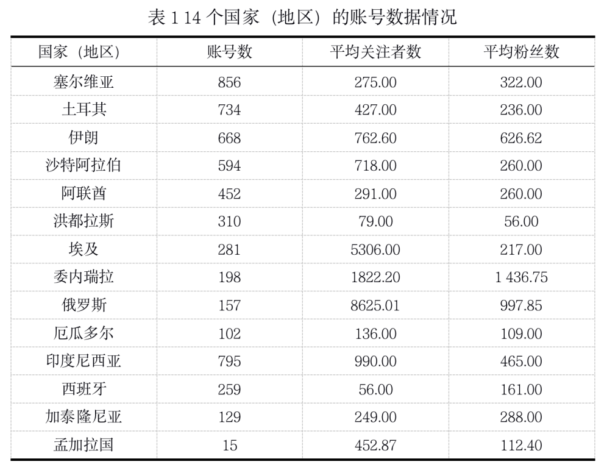
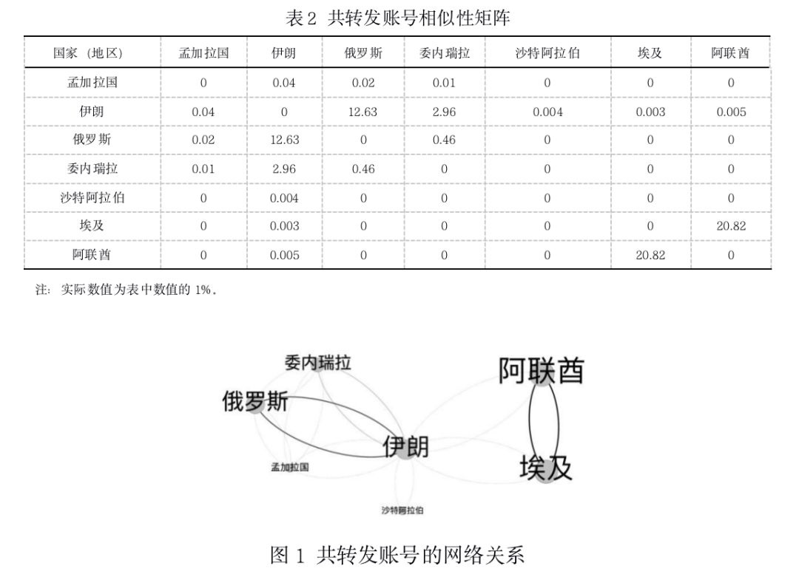
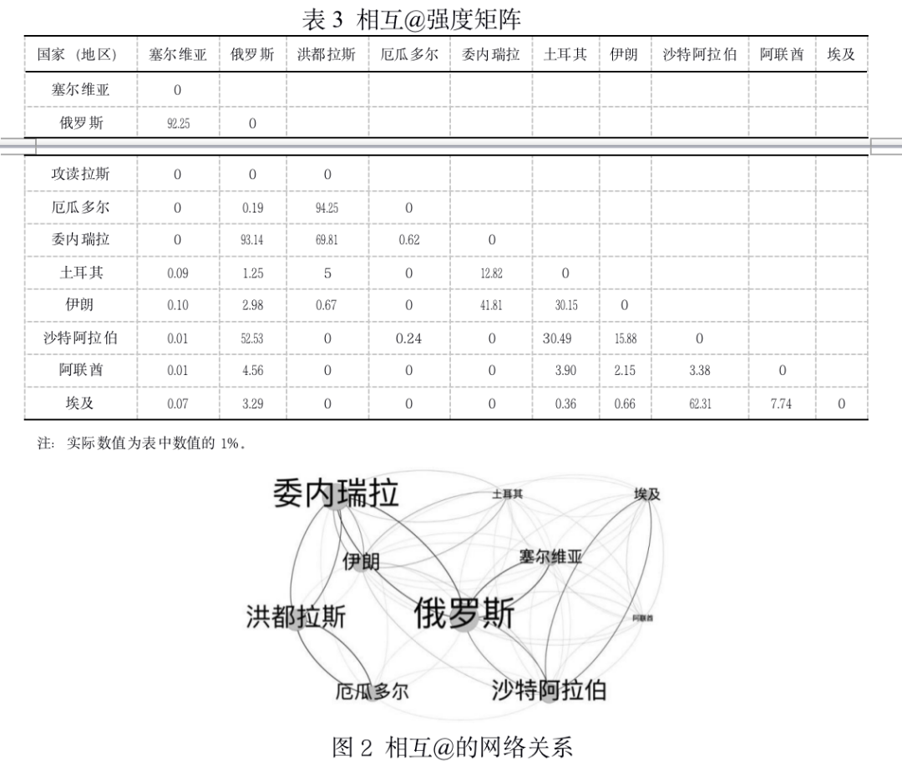
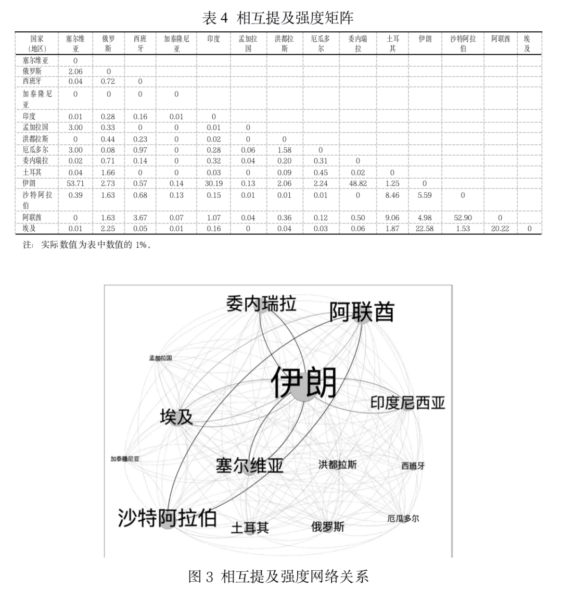
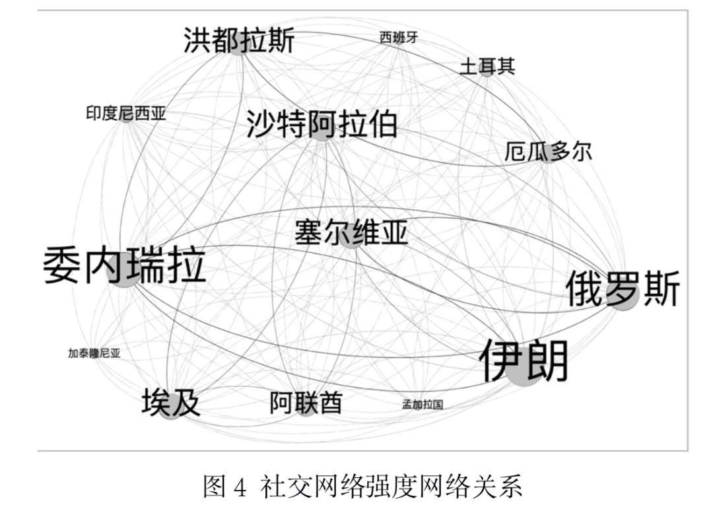
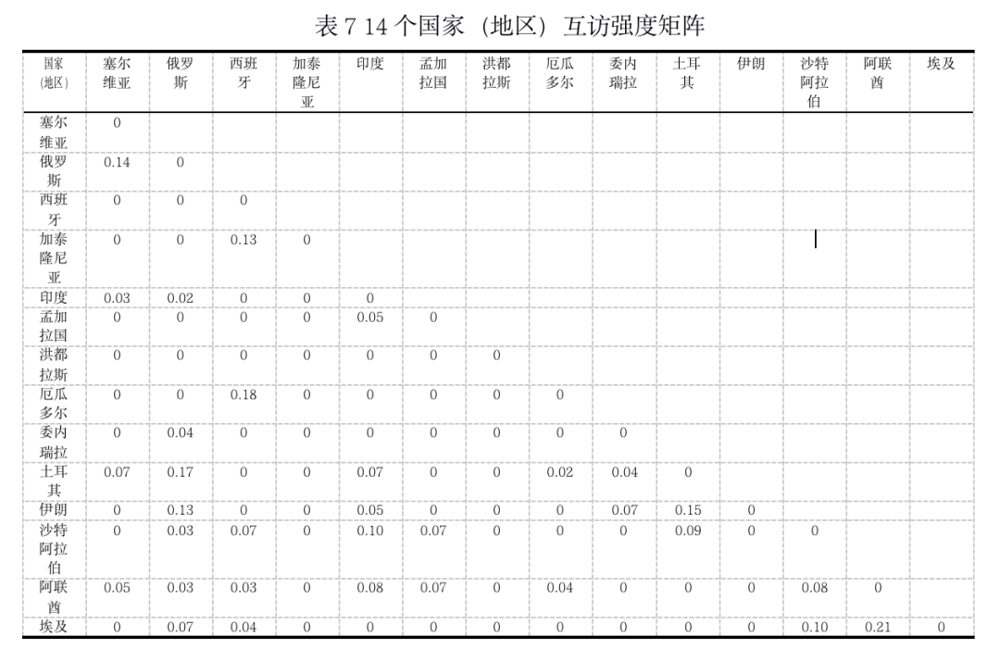

收录于合集

隐形的国际互动：推特平台被删除账号的关系分析
作者： 何康，北京师范大学新闻传播学院博士生；张洪忠，北京师范大学新闻传播学院教授；贾全鑫，北京师范大学新闻传播学院硕士生；李阳阳，中国电子科技集团公司 电子科学研究院/社会安全风险感知与防控大数据应用国家工程实验室。
来源： 《西安交通大学学报（社会科学版）》2022年第3期，本文为摘编版，全文请参考杂志。
01
研究背景
庞大的用户群体、高黏性的使用模式及其不断显现的舆论影响和社会动员能力使得社交媒体已成为超过国家边界的特殊社会系统。然而，在社交媒体用户数不断攀升的同时，被删除的账号数也与日俱增。“删帖封号”是国内外社交平台进行内容监管的惯常做法。尽管删除行为背后的真实目的和缘由各不相同，外界也难以得知，但被删除账号本身可为人们重新理解社交媒体环境、议程设置以及国际外交关系提供不同的切入点。
从删号行为上看，删号与停号反映了以推特为代表的美国社交网络平台对社交媒体中相关内容、议题、关系的直接干预，由此能发现网络平台治理的重点。从数据本身看，删除账号还是分析被删除国家（机构、组织）间，以及被删除与未被删除国家（机构、组织）间关系的独特样本。
本文关切被删除账号之间的网络关系特征，以及被删除的社交网络中的国别关系是否与现实世界的外交关系一致。以要言之，被删除的社交网络中的国家关系与现实是否有关？对于推特删除账号的原因和账号身份细节问题（如机器人账号、网络水军账号），本文没有涉及：一是本文的研究对象是社交网络中已然生成却被删除的账号，即使存在社交机器人的成分，其背后仍可能是国家或相关利益团体的操作，其行为也构成了这部分的网络社交现象，仍然可以从整体上进行考察；二是本文的数据不牵涉账号发布具体内容的性质划分，因而不影响国家关系的判断；三是公开的账号经过平台处理，已无法完全还原相关身份和内容信息。本文重点对被删除的账号进行国别分类，再由国家角度出发分析互动关系。
02
文献综述与问题提出
（一）什么是国际关系数字化？
**
**
“国际外交关系”指主权国家行为主体之间在政治、经济、军事、文化等领域所产生的关系总和。新时代的外交关系体现着新的形势变化，正如美国学者Plischke所讲：“外交在理论上和实践上的表现形式，如同大多数人类制度一样，是充满活力并随时代而变化的。”经济全球化、全球媒介化、媒介数字化的变革自然也牵引、激发着外交领域转型，其中一大特点即国际关系数字化。
（二）国际关系数字化的特点
数字化时代体现的是技术、社交、经济和政治上复杂的改变，这已经成为外交转型的一个特殊的阶段和进程，决定了现代外交的走向。其特点如下：第一，社交媒体本身就是信息全球化的表征；第二，不同社交媒体之间体现出国家关系张力；第三，同一社交媒体上，带有国家性质的互动行为与内容表现得非常突出；第四，大数据还引发了国际关系领域的新问题。
（三）问题的提出
可以发现，国际关系的数字化转型并不是线下空间单维度向线上空间的替代与腾挪，而是线上与线下双重空间东鸣西应、相互影响的过程。然而，目前国内较少如AkinUnver所梳理的，从宏观层面的国别角度来考察互动中的网络关系，并与外交互访进行对比分析的研究。为此，本文尝试对社交媒体数据进行国别划分，展现推特所删除社交账号中的国际关系图景。
03
推特国别账号的删除数据分析
本文在推特官方网站上下载了经过脱敏处理（不涉及用户隐私）的账号数据集进行分析，时间跨度为2018年10月—2020年5月。在号称“治理虚假信息”的行动中，推特关闭了17个国家（地区）的账号。经过数据清理获得社交账号共79405个。经过清理，得到14个国家（地区）的44723个社交账号。14个国家（地区）的账号数、粉丝数、关注者数见表1。

04
推特删除国别账号的关系强度分析
本文进一步对14国（地区）被删除账号之间的关系进行分析，以国别为单位考察账号之间是否有联系以及联系强弱。
本文的网络社交强度具体指在推特平台中账号之间的社交关系紧密程度。从三个指标构建国家之间的网络社交强度关系：共转发账号强度、相互@强度以及相互提及强度。
（一）共同转发强度
根据群落生态学的统计方法和生态位理论，若同一物种能在两个或多个群落中生存，说明这些群落具有一定的相似性，相同物种数量越多则群落越相似。类比到社交网络中，国家对账号的转发次数，相当于群落中物种的个体数，国家对于相同内容的转发量则可以反映国家之间的关联程度。
共转发账号的矩阵见表2，网络关系如图1所示，图中线条越粗、节点越大，表明国家之间共转发账号强度越大。其中，阿联酋与埃及（0.208）、伊朗与俄罗斯（0.126）、伊朗与委内瑞拉（0.030）依次为共转发强度的前三组。

（二）相互@强度
由于国家数值级差较大，为使数据具有可比性，本文对国家之间相互@的次数进行标准化处理，方法是计算两个国家之间相互@的次数占这两个国家@其他国家总次数的比例，由此也将数值整理为0~1的区间，反映国家的相对偏好，具体数据见表3，网络关系如图2所示，线条越粗、节点越大，表明国家之间相互@强度越大。其中，厄瓜多尔与洪都拉斯（0.943）、委内瑞拉与俄罗斯（0.931）、塞尔维亚与俄罗斯（0.922）依次为相互@强度的前三组。

（三）相互提及强度
与对相互@的国家数值的处理方式相同，对相互提及国家的次数进行标准化处理后的结果见表4，网络关系如图3。伊朗与塞尔维亚（0.573）、沙特阿拉伯与阿联酋（0.529）、伊朗与委内瑞拉（0.488）依次为相互提及强度的前三组。

（四）网络社交强度
将上文中的三个强度指标求平均值，生成国家之间的社交网络强度。

05
社交网络强度与外交互访关系分析
（一）外交互访强度
本文通过各国外交部网站、维基百科和谷歌新闻查询了2015—2020年14个国家（地区）的最高领导人外交访问数据，并进行相互检验，从而计算出国家（地区）之间的互访次数。由于各个国家（地区）出访的总次数不同，为了反映国家（地区）互访偏好，研究对原数据进行标准化处理，即用各国（地区）出访次数除以所有国家（地区）总出访次数，最终得到14个国家（地区）互访强度矩阵，见表7。

（二）相关性分析
本文采用Mantel检验法处理距离矩阵的相关分析。Mantel检验适用于两个矩阵数据之间的相关关系的检验，由Nathan于1976年提出。用R语言程序进行Mantel相关性检验，数据表明网络社交强度与互访强度正相关，显著性P=0.005，R=0.324，如图5所示。

06
研究发现
（1）被删除的账号不是各自为阵式的独立存在，而是形成了盘综交错的巨大互动网络；
（2）被删除账号中，网络社交强度的前三组国家依次是：厄瓜多尔与洪都拉斯、俄罗斯与塞尔维亚、俄罗斯与委内瑞拉;
（3）高社交强度组中，最活跃的国家是伊朗；
（4）网络社交强度与政治互访次数呈正相关关系，即被删除账号的网络社交关系越紧密，这些国家之间在现实中的互访往来次数也越多。结果表明，社交媒体空间在一定程度上成为现实国家关系的映射，这种关系可以通过社交媒体数据挖掘和社会网络分析方法进行多维度探究。
排版 | 屈媛媛
本文章来源于《西安交通大学学报（社会科学版）》2022年第3期，本文为摘编版，全文请参考杂志。
文章观点不代表本平台观点。